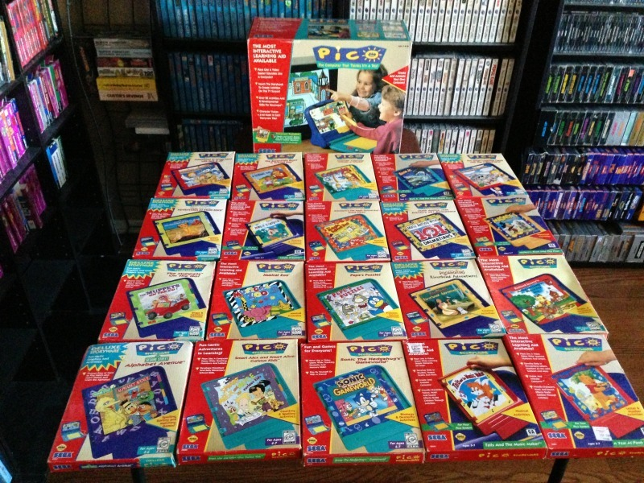

1996:
Sega Pico (1994)
“The Sega Pico, also known as Kids Computer Pico, is an educational video game console by Sega Toys. Marketed as “edutainment”, the main focus of the Pico was educational video games for children between 3 and 7 years old.“